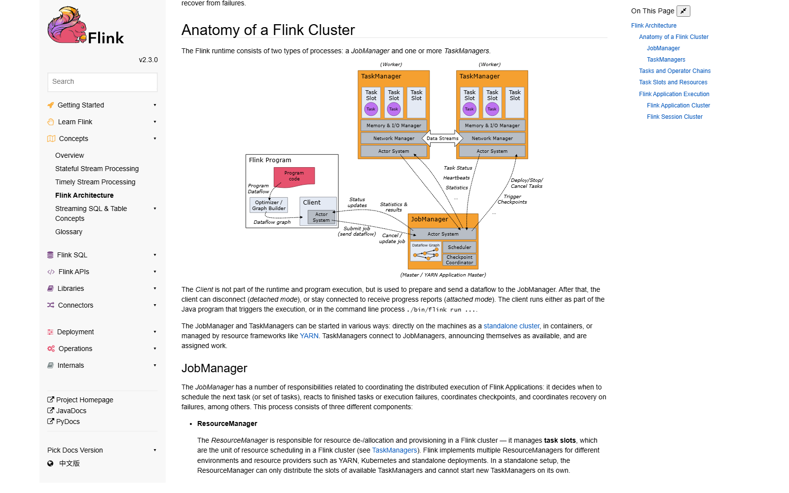
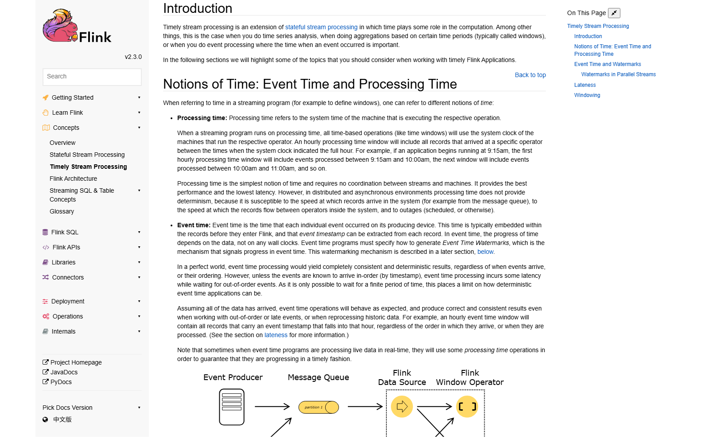
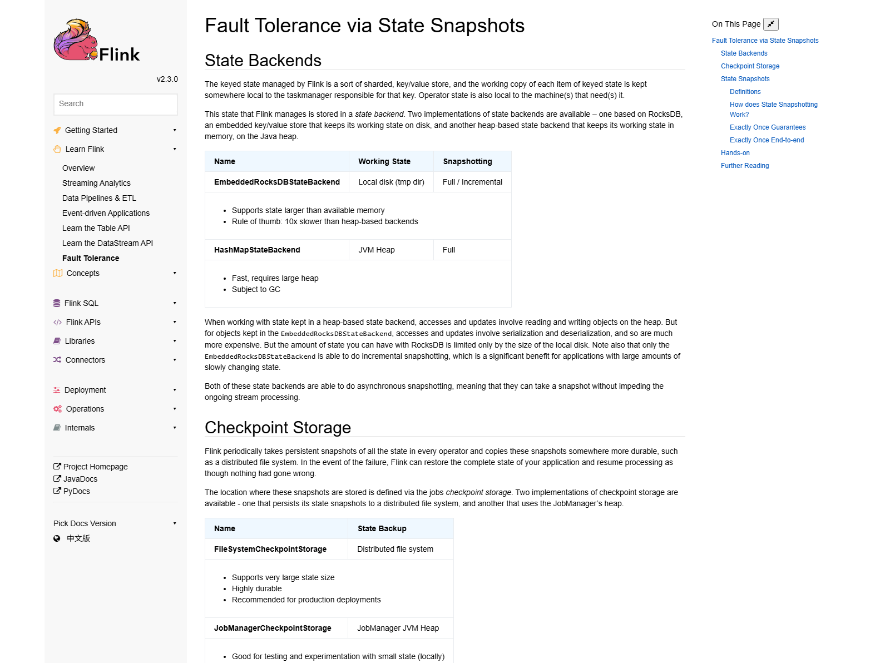

OSS PROJECT INTRO · APACHE FLINK 系列第 3 期：核心概念与整体架构
上一期我们把 Flink 跑了起来，这期继续——把你在 Web UI 上看到的每个词变成能讲清楚的概念。作业为什么分成 JobManager 与 TaskManager 两种进程、Slot 到底隔离了什么；你写的 DataStream 代码怎么变成 StreamGraph → JobGraph → ExecutionGraph 三层图；Event Time 与 Watermark 怎么把乱序治住；Checkpoint 与两个状态后端各自适合什么量级；窗口从"第一个元素进窗"到"水印触发"的完整生命周期。学完这期，仪表盘上再没有黑话。
Flink 集群的运行时只有两种进程。JobManager（大师傅）：负责协调分布式执行——决定下一个任务派给谁、响应任务失败、协调 Checkpoint、组织恢复，官方把它的职责拆成三个组件：ResourceManager 管集群资源的分配与释放，调度单位就是 Task Slot；Dispatcher 对外提供提交作业的 REST 接口、跑 Web UI，并为每个提交的作业起一个 JobMaster；JobMaster 管单个 JobGraph 的执行，集群同时跑多个作业时各有一名。TaskManager（工人）：真正执行数据流任务的 JVM 进程，负责缓冲与交换数据，至少要有一个。

再细看 Slot：它是 TaskManager 里最小的资源调度单位，每个 slot 分得托管内存的固定份额（三个 slot 就是各三分之一），目前只隔离托管内存，不隔离 CPU。Flink 默认允许同一作业的不同任务共享 slot，所以一个 slot 能装下作业的整条流水线——集群需要的 slot 总数只要等于作业的最高并行度即可。这个设计让你改并行度时不必重算资源账。
来源注记——nightlies.apache.org 2.3 文档 Concepts / Flink Architecture（2026-09-30 核对）：JobManager 三组件（ResourceManager、Dispatcher、JobMaster）、slot 只隔离 managed memory、slot 共享与"slot 数 = 最高并行度"均为官方原文。
你在 Web UI 里点开作业看到的那张图，是这条流水线的中间层。第一层 StreamGraph 在客户端生成，忠实记录"数据怎么流"；第二层 JobGraph 是提交单位，把能串起来执行的算子合并成节点（operator chain，链上算子同线程直传，省序列化）；第三层 ExecutionGraph 由 JobManager 生成——官方内部文档原话："The JobManager transforms the JobGraph into an ExecutionGraph"，它是 JobGraph 的并行化版本，每个并行子任务对应一个执行顶点，任务重试、故障恢复都发生在这一层。三层图各管一件事：写起来直觉、传过去紧凑、跑起来并行。
来源注记——nightlies.apache.org 2.3 文档 Internals / Job Scheduling（2026-09-30 核对）："The JobManager transforms the JobGraph into an ExecutionGraph"、ExecutionGraph 为 JobGraph 的 parallel version、并行度 100 即一个 JobVertex 对应 100 个 ExecutionVertex 均为官方原文。
流处理里"几点"有两种答法。Processing Time（处理时间）：执行算子的那台机器的系统时钟——最简单、延迟最低、不需要协调，但结果不确定：网络抖动、消息队列积压、机器停顿都会改写"哪条数据落在哪个窗口"。Event Time（事件时间）：每条数据自带的、在生产设备上就打好的时间戳——时间进度跟着数据走而不跟墙钟走，只要数据到齐，无论乱序、迟到还是重放历史，结果都一致。代价是要回答第 1 期留下的问题："该等到什么时候，才能确认这个窗口到齐了？"答案是 Watermark（水位线）：它是一条插进数据流里的特殊记录，含义是"事件时间不早于我的数据都到齐了"——官方文档把它定义为 signaling progress in event time 的机制。水位线一过某个窗口的结束时刻，窗口就触发计算；之后才到的迟到数据，交给侧输出或容忍延迟参数处理。

// 声明"最多乱序 5 秒"：事件时间减 5 秒就是水位线推进的位置
WatermarkStrategy<Order> wm = WatermarkStrategy
.<Order>forBoundedOutOfOrderness(Duration.ofSeconds(5))
.withTimestampAssigner((order, ts) -> order.getEventTime());
orders.assignTimestampsAndWatermarks(wm);这两行就是乱序协议的落地：你告诉引擎"我的数据最多乱 5 秒"，引擎按最大观测事件时间减 5 秒推水位线。调的是确定性与延迟的旋钮：容忍乱序越多，窗口开得越久，结果越准、出数越晚。多并行度下每个算子取各输入分区水位线的最小值再推进——任何一条分区慢，整体水位线就慢，这也是排查"窗口迟迟不触发"的第一入口。
来源注记——2.3 官方文档 Timely Stream Processing（2026-09-30 核对）：processing time 为系统时钟、event time 内嵌于记录、event time 程序必须指定 Event Time Watermarks 生成机制均为官方原文；WatermarkStrategy 写法见 DataStream API 文档。
这套机制的学名叫异步屏障快照，是 Chandy-Lamport 分布式快照算法的流式变体。官方文档的描述：所有 source 先记录自己的消费位点、往数据流里插入编号的 checkpoint barrier；barrier 随作业图流动，算子收到 barrier 就记录自己的状态；coordinator 收齐所有回执，第 n 次 checkpoint 完成。状态写在状态后端里，官方提供两种：HashMapStateBackend——状态以 Java 对象放在 JVM 堆上，读写就是对象访问，快、但受内存上限约束，是不配置时的默认值；EmbeddedRocksDBStateBackend——状态放进内嵌 RocksDB（落在 TaskManager 本地磁盘），序列化存取平均比堆后端慢约一个数量级，但状态规模只受磁盘限制，且是唯一支持增量 checkpoint 的后端。一句话：HashMap 换性能，RocksDB 换规模。

来源注记——2.3 官方文档 Fault Tolerance 与 Ops / State Backends（2026-09-30 核对）："If nothing else is configured, the system will use the HashMapStateBackend"、RocksDB 慢约 10 倍、仅 EmbeddedRocksDBStateBackend 支持增量快照、asynchronous barrier snapshotting 为 Chandy-Lamport 变体均为官方原文。
窗口是"把无界流切成有界块"的官方答案。内置四种窗口分配器：滚动窗口（tumbling，固定长度不重叠）、滑动窗口（sliding，滑动步长小于窗口长时一条数据会落进多个窗口）、会话窗口（session，按不活跃间隙动态收口，没有固定起止）、全局窗口（global，默认永不触发，必须自定义 Trigger）。窗口的完整生命周期官方一句话讲完：第一个属于它的元素到达时创建；时间（事件或处理时间）越过"窗口结束时间加上容忍延迟"后整体移除；而默认的 EventTimeTrigger 就干一件事——水印越过窗口末端即触发计算。
| 窗口类型 | 切分方式 | 典型场景 |
|---|---|---|
| 滚动窗口 | 固定长度，首尾相接不重叠 | 每分钟订单额、每 5 分钟 PV |
| 滑动窗口 | 长度固定，按步长滑动可重叠 | 最近 1 小时趋势、移动平均 |
| 会话窗口 | 按活跃间隙动态分组收口 | 用户会话切分、行为分析 |
| 全局窗口 | 全部进一个窗口，永不自动触发 | 自定义触发逻辑的底座 |
Trigger 决定"什么时候出数"，Evictor 决定"出数前扔掉谁"——默认配齐前者就够；要留意官方的提醒：指定 Evictor 会关掉预聚合，窗口状态量会显著变大。窗口内聚合还有个工程习惯：先用 aggregate() 增量聚合，窗口里只留一个小中间值，而不是攒一整窗原始数据。
来源注记——2.3 官方文档 DataStream API / Windows（2026-09-30 核对）：四种 assigner、窗口创建与移除时机的原句、EventTimeTrigger 在水印越过窗口末端时触发、指定 evictor 阻止预聚合均为官方原文。
每题点击选项立即反馈 · 共 3 题
1. Flink 集群需要的 slot 总数，官方设计下等于？
2. 水位线（Watermark）在 Flink 里的含义是？
3. 状态大到单机内存装不下、还要增量快照，选哪个状态后端？
先想清楚对齐在保护什么。一个双输入算子若先收到输入一的 barrier 就立刻快照，快照里就会混进"输入二 barrier 之后"的数据——恢复重放时这条数据会被再算一遍，exactly-once 就破了。对齐的本质是让快照的边界严格落在"所有输入都恰好消费到 barrier n"这一瞬间，官方文档说得很准：对齐仅在提供 exactly-once 保证时需要。代价也由此而来：快的分区到 barrier 后只能停下等慢的，数据在缓冲区里排队，出现"周期性停顿"，表现为吞吐锯齿、checkpoint 时长抖动。什么时候该关？业务能容忍重复或上游能去重时，可以切到 AT_LEAST_ONCE 模式，barrier 不对齐、数据不停，换来更平的吞吐。另一个官方出口是 unaligned checkpoint：快照时把"还在缓冲区里没处理的数据"也一并拍进快照，让 barrier 越过积压直接飞——代价是快照更大、恢复逻辑更重，官方定位是反压导致对齐超时时的解药，默认关闭。判断次序建议是：先看对齐是不是真瓶颈（Web UI 看 busy 与 backpressured 时间占比），再用调大缓冲、优化慢分区等常规手段，最后才动 unaligned——它是安全气囊，不是常态配置。快照机制的一切开关，都要用"恢复口径换运行效率"这杆秤来称。
先给判断框架，再给调优入口。判断框架三问。一问状态规模：状态总量 × 预期增长是否逼近 TaskManager 堆上限？逼近 → 换 RocksDB 是迟早的事，早换早稳。二问访问模式：每条数据要读写几次状态？大窗口聚合这类"每条必读写"的作业，序列化开销按条计，延迟涨幅最明显；而状态访问稀疏的作业几乎无感。三问恢复诉求：要增量 checkpoint、要几十 GB 级状态，RocksDB 是唯一选项——这两条能力是硬门槛，不是偏好。三问里有两问站 RocksDB，这次交换就是划算的：延迟涨的是常数，OOM 丢的是整个作业的可用性。调优入口按收益排序。第一，开增量 checkpoint（RocksDB 独有），平时只传变化部分，快照又快又小；第二，调 RocksDB 的内存配比——block cache 与 write buffer 的托管内存参数，官方默认偏保守，给足内存能明显收窄与堆后端的差距；第三，缩小状态本身：状态 TTL 让过期键自动清理、把"大 Map 状态"拆成"keyBy 后的键控状态"，都能直接减少序列化量；第四，实在敏感的热路径（如几万 QPS 的去重计数），可以用"RocksDB 兜底 + 热数据放堆内 Flink 状态"的分层思路。一句话总结：后端选型不是宗教，是把"状态规模、访问频率、恢复口径"三个约束各归其位——参数能调的是差距，调不动的是量级，量级决定选型。
带走这五句话：
下期预告：第 4 期《实战：订单流实时大屏》——把本期概念全部用上：KafkaSource 消费订单流、事件时间窗口做分钟级统计、KafkaSink 事务写出端到端 exactly-once，最后走一遍反压排查的入门三步。
Primary source：Apache Flink 官方文档 2.3（nightlies.apache.org）——本期架构、三层图、时间语义、快照与窗口机制均出自官方文档 Concepts / Internals / DataStream API 章节（v2.3.0，2026-09-30 核对）。